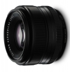

器材库 > APS画幅镜头 > XF 35/1.4 R

详细规格
镜头类型
标准镜头
发布日期
2012-01-10
焦距
35mm
等效35mm画幅焦距
53mm
最大光圈
f/1.4
最小光圈
f/16
视角（对角）
44.2°
镜头结构
8片/6组
非球面镜片
1片
光圈叶片
7片
最近对焦距离
28cm
最大放大倍率
0.17倍
滤镜口径
52mm
镜头卡口
Fujifilm XF
防抖
否
颜色
黑色
尺寸
65.0×54.9mm
重量
187g
笨笨小兔子2017-09-23 12:343.83 分
操作性 3.50耐用性 4.00性价比 4.00解像力 4.50色彩还原 4.50机械结构 2.50
蓝龙胆2017-06-24 14:173.33 分
操作性 1.50耐用性 4.00性价比 4.00解像力 5.00色彩还原 4.50机械结构 1.00
fish112016-02-04 17:344.5 分
操作性 4.50耐用性 4.50性价比 4.00解像力 5.00色彩还原 5.00机械结构 4.00
drac2015-01-23 15:294 分
操作性 4.00耐用性 3.50性价比 4.00解像力 5.00色彩还原 4.50机械结构 3.00
zjize2014-12-25 12:384.58 分
操作性 4.00耐用性 4.50性价比 4.50解像力 5.00色彩还原 5.00机械结构 4.50
军工厂LH19882014-02-26 08:184.58 分
操作性 5.00耐用性 4.50性价比 5.00解像力 4.50色彩还原 4.50机械结构 4.00
anson5342014-02-12 13:284.25 分
操作性 4.00耐用性 4.50性价比 4.00解像力 5.00色彩还原 5.00机械结构 3.00
remando2013-08-31 13:544.42 分
操作性 4.50耐用性 4.00性价比 5.00解像力 4.50色彩还原 4.50机械结构 4.00
Pancras2012-10-16 20:584.5 分
操作性 4.50耐用性 4.50性价比 5.00解像力 4.50色彩还原 4.50机械结构 4.00
产品图 / 样片
XF35/1.4 R
评测 / 相关文章
- ［试用］美丽的色彩，XF35/1.4试镜 （存档）
- ［资讯］支持X-E2对焦系统 富士公布6款镜头新固件 （存档）
- ［试用］棋逢对手？！XF23/1.4 PK XF35/1.4 （存档）
- ［资讯］富士X-E2官方样张欣赏 （存档）
- ［资讯］富士公布三款XF镜头的固件 （存档）
- ［资讯］富士公布X-pro1和镜头的最新固件 （存档）
相关文章
- ［试用］美丽的色彩，XF35/1.4试镜 （存档）
- ［资讯］支持X-E2对焦系统 富士公布6款镜头新固件 （存档）
- ［试用］棋逢对手？！XF23/1.4 PK XF35/1.4 （存档）
- ［资讯］富士X-E2官方样张欣赏 （存档）
- ［资讯］富士公布三款XF镜头的固件 （存档）
- ［资讯］富士公布X-pro1和镜头的最新固件 （存档）
- ［资讯］富士XF35/1.4 R （存档）
- ［资讯］量身定制 为富士35定打造纯银遮光罩 （原站已下线）
- ［试用］X-Trans旅行画卷 澳大利亚西南角 （原站已下线）